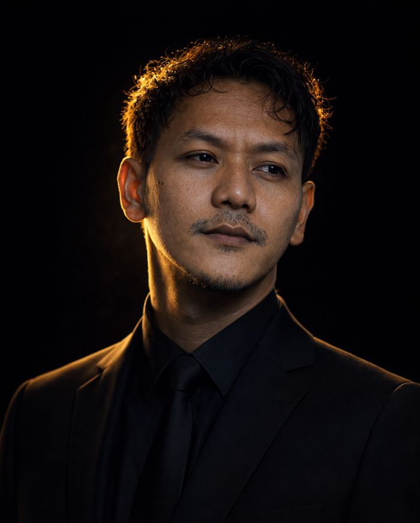
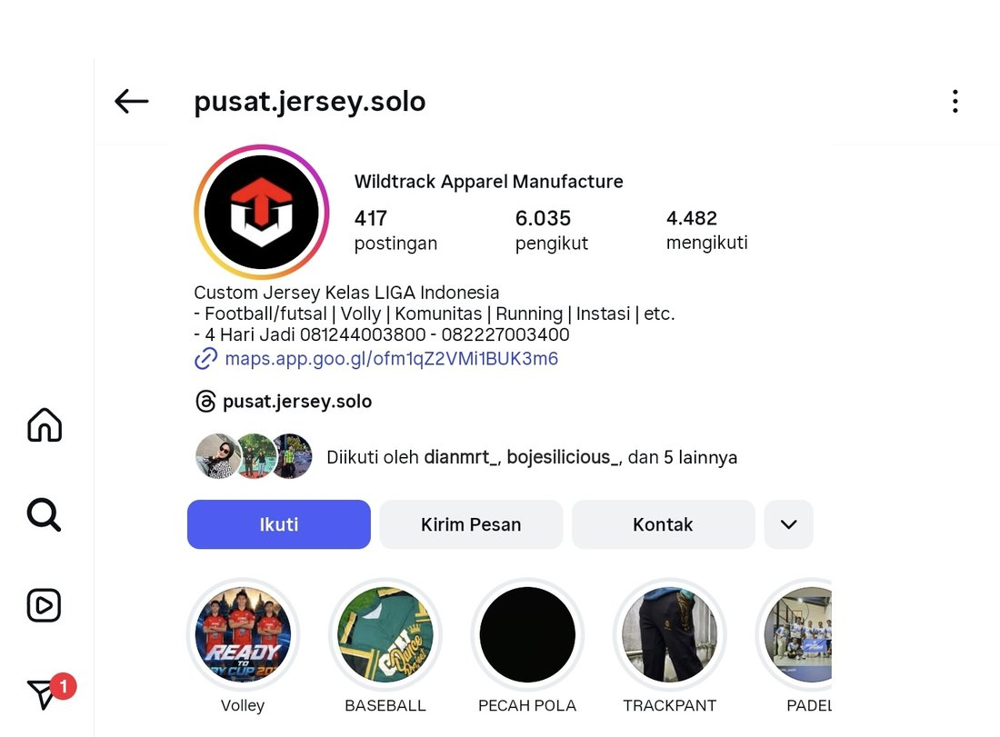
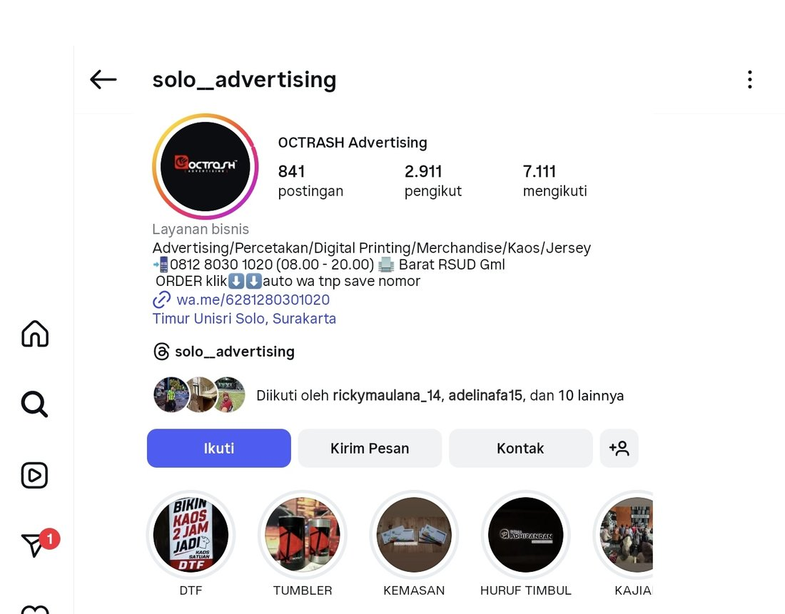
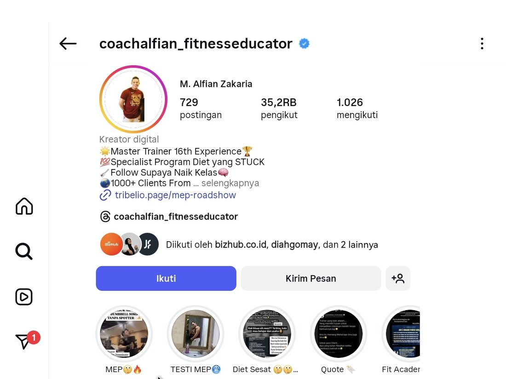
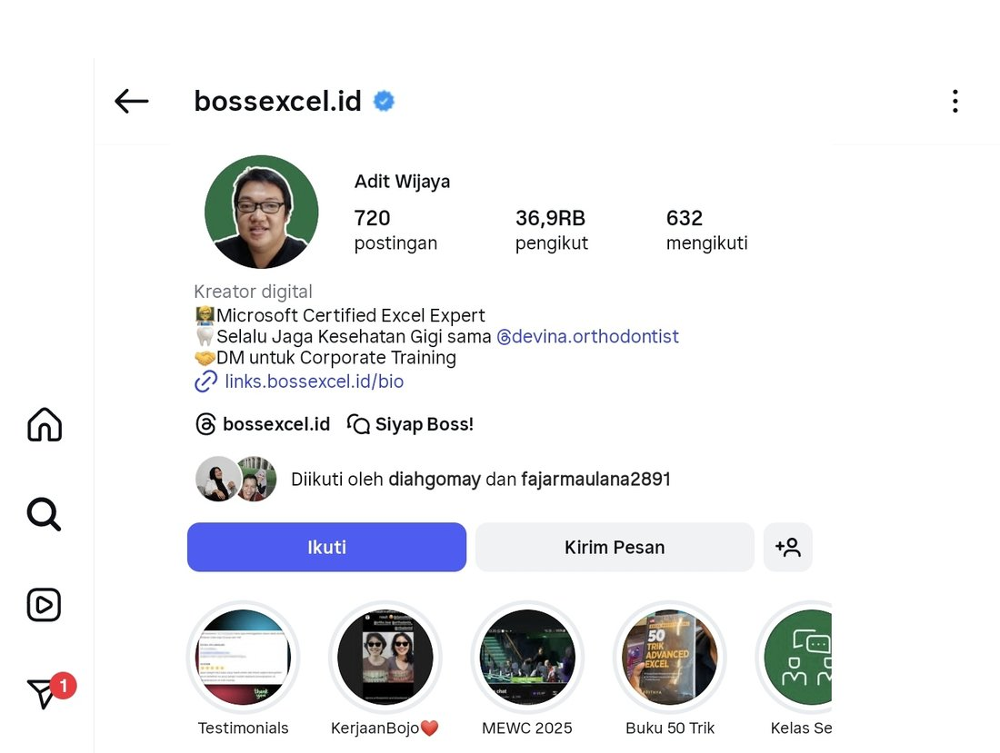

Saya audit campaign Meta Ads secara sistematis — bukan ganti-ganti creative atau audience berdasarkan feeling. Setiap rekomendasi didasarkan pada angka yang bisa dipertanggungjawabkan.

Saya Ejja, Meta Ads Specialist yang fokus ke satu hal: bikin campaign klien berhenti jalan berdasarkan tebakan. Selama beberapa tahun terakhir, saya audit dan kelola campaign dari berbagai niche — mulai dari produk fisik sampai produk digital — dengan pendekatan yang sama setiap kali: diagnosa dulu sebelum eksekusi.
Saya percaya kebanyakan "iklan boncos" bukan soal budget kurang atau algoritma yang jahat. Lebih sering soal hal kecil yang terlewat sebelum klik publish — pixel yang salah setup, audience yang overlap, atau offer yang gak match sama yang dijanjikan di creative. Kerjaan saya adalah nemuin hal kecil itu, lalu kasih rekomendasi yang jelas: scale, fix, atau stop.
Bukan "iklannya jelek" atau "iklannya bagus" — tapi keputusan konkret yang bisa dieksekusi hari ini.
ROAS stabil di atas target selama periode yang cukup. Saatnya naikkan budget secara terukur, bukan dadakan.
Funnel-nya berfungsi tapi ada gap spesifik — pixel, offer, atau audience overlap. Diperbaiki dulu sebelum nambah spend.
Kalau funnel-nya emang gak match dari awal, lanjut nambah budget cuma nambah kerugian. Lebih baik diakui dan dialihkan.
Setiap angka di bawah ini bisa dijelaskan detailnya kalau ditanya — termasuk apa yang gak berhasil sebelum ketemu yang berhasil.




Sebelum ubah apapun, saya audit pixel, funnel, dan struktur campaign dulu. Kebanyakan "masalah iklan" sebenarnya masalah teknis kecil yang gampang dibenerin.
Saya kasih akses langsung ke Ads Manager — bukan laporan yang sudah disaring. Klien tahu persis apa yang terjadi di campaign mereka.
Kalau hasilnya belum maksimal, saya bilang belum maksimal — bukan dibungkus angka yang dipoles biar kelihatan bagus.
Klien paham kenapa sebuah keputusan diambil — bukan cuma terima laporan tanpa konteks. Supaya keputusan ke depan bisa lebih cepat.
Review mendalam 1x — diagnosis lengkap + rekomendasi SCALE/FIX/STOP untuk campaign yang sedang berjalan.
Setup, optimasi harian, dan laporan rutin. Fee disesuaikan dengan skala spend bulanan:
Sesi 1:1 (60 menit) untuk bahas strategi spesifik — scaling, masalah ROAS, atau structuring campaign baru.
Ceritakan kondisi campaign-nya. Saya akan kasih tahu jujur apakah ini soal yang bisa di-fix cepat, atau butuh strategi yang lebih dalam.